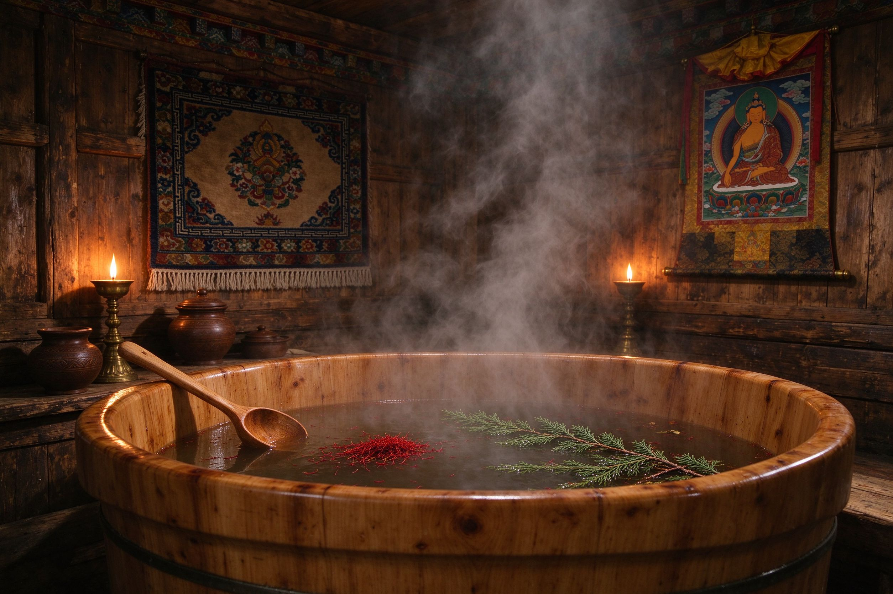
WORLD HERITAGE藏医药浴法 · 五味甘露
藏语称“泷沐”，以圆柏叶、黄花杜鹃、水柏枝、高山麻黄、白野蒿等“五味甘露”熬制药液沐浴，通过毛孔渗透调理气血。2018年“藏医药浴法”列入联合国教科文组织人类非物质文化遗产代表作名录。
“此生，能够以本民族医药救治普天下的病患，是我最幸福的事。” —— 四朗青佩
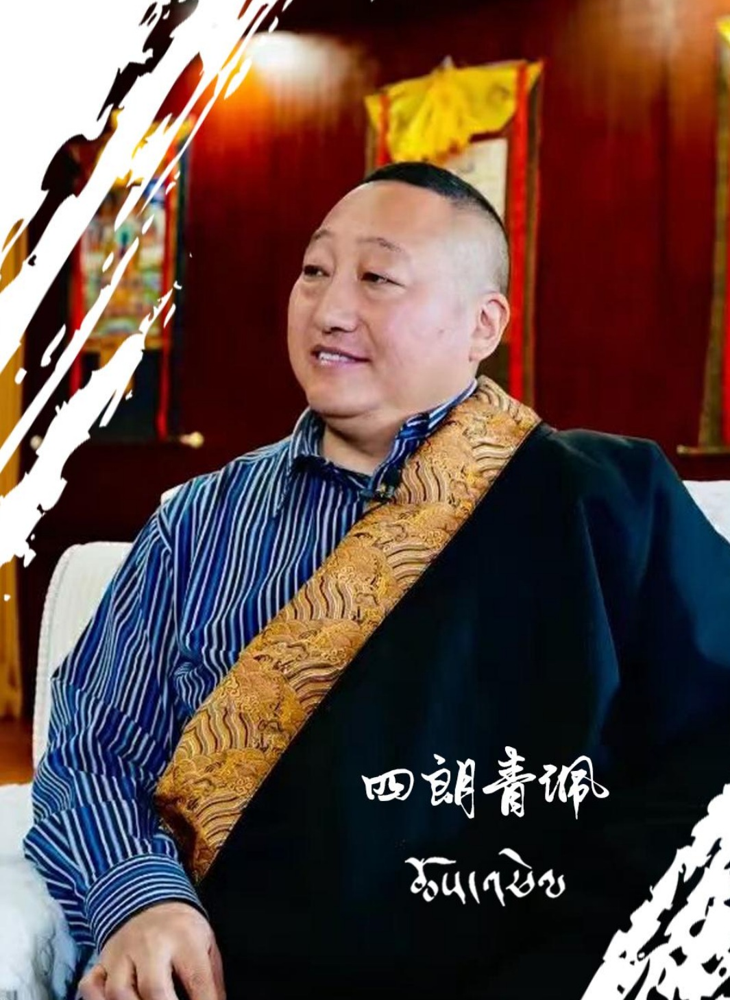
三百余年藏医世家之后，六岁启蒙、十六岁行医，师从数位藏医药泰斗，将千年藏医智慧从高原带入内地，行医三十余年，累计服务患者超百万人次。
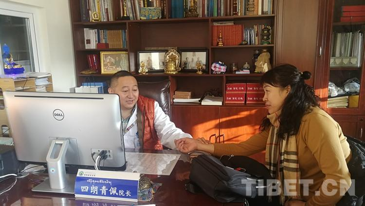
四朗青佩，藏族，1976年出生于四川甘孜炉霍的藏医世家。家族传承可追溯至清朝乾隆时期——先祖阿托为乾隆御前藏族御医，治愈乾隆顽疾获赐“代”姓与黄马褂；母亲系南派藏医发祥地德格土司后人。家中珍藏满、蒙、藏三种语言的祖传医学典籍与秘方，传承三百余年。
六岁启蒙学医，自幼诵读《四部医典》等传世经典；十六岁正式出诊，先后师从西藏藏医学院首任院长、一代宗师措如·才朗教授，以及藏医全科专家卡洛教授（全国名中医、青海藏医院原院长）、忠登郎加等藏医药名家，系统研习藏医全科与内科。此后赴重庆医科大学研学“藏、中、西”三医结合，并先后在四川省人民医院、北京同仁医院从事临床工作近十年。
1999年，年仅24岁的他应国家统战部与民宗委支持、经扎日活佛指点，来到北国冰城哈尔滨，创办内地第一家民营藏医院——哈尔滨德格藏医医院，成为将藏医药成规模、成体系推广到内地并取得成功的先行者；2020年，又在天府之国成都创办成都喜马拉雅藏医医院，构建起覆盖南北的藏医药服务网络。
因号脉精准、医术精湛，他被患者与业内亲切称为“人体CT机”、被患者称作“药师佛”。2025年，他获评国家级非物质文化遗产——藏医药（甘孜州南派藏医药）代表性传承人。
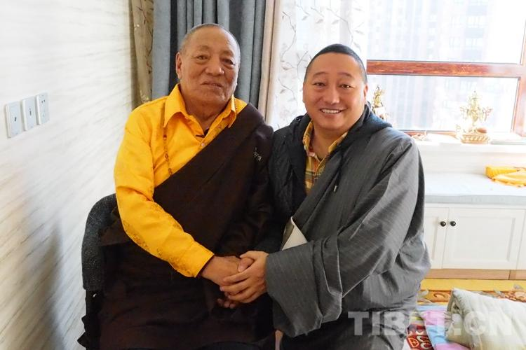
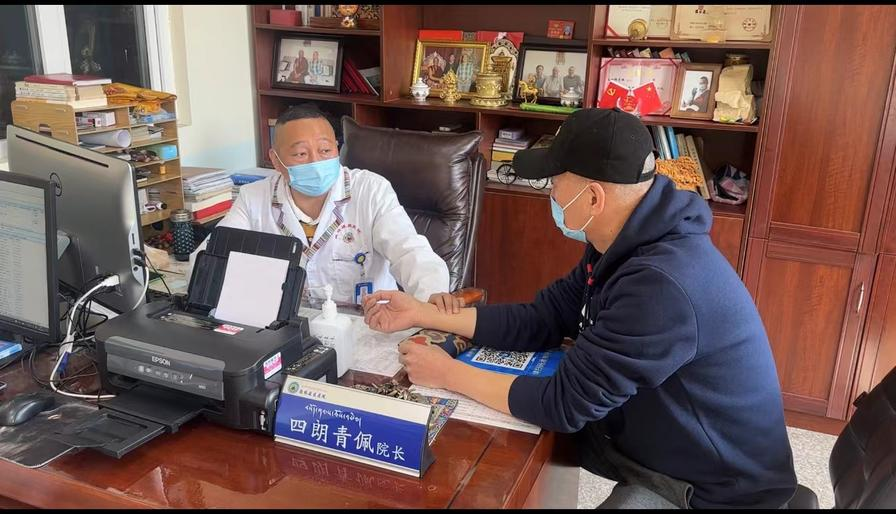
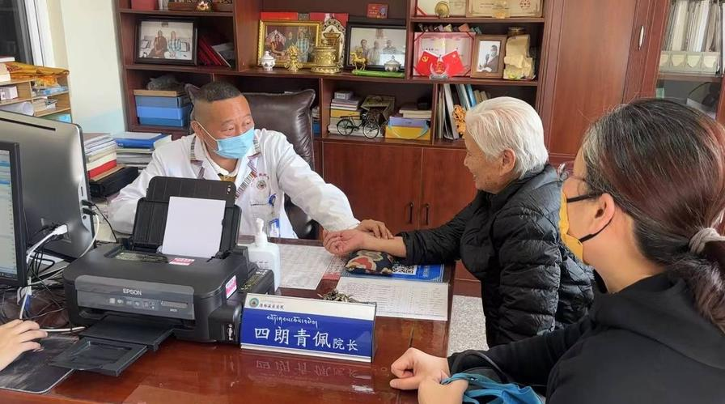
从雪域高原到北国冰城，从诊室问诊到古籍研读——透过镜头，走近这位南派藏医传承人的行医日常与文化坚守。
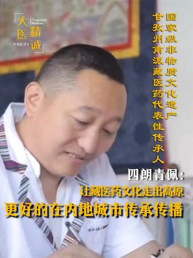
院长说四朗青佩：从甘孜藏医世家到内地城市，让藏药浴、放血技艺在平原落地生根。
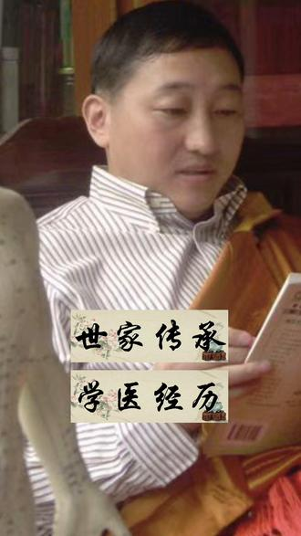
深度讲述播客深度讲述：藏医世家传承与学医经历，扎根哈尔滨三十余载的民族团结故事。
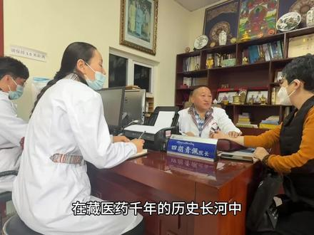
出诊实录天南海北的患者排成长队，有人带着X光片，有人揣着辗转多地的病历……
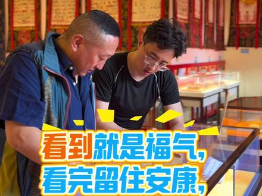
医者日常一天看诊八十多位患者，下午又到博物馆研究藏医古方——可敬的藏医人。
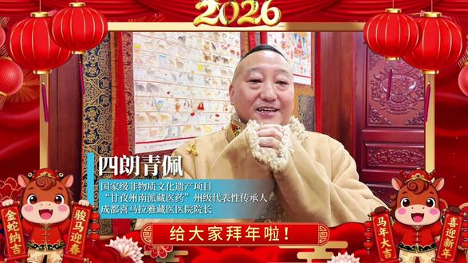
新春祝福四朗青佩院长以藏医药文化传承者的身份，送上最诚挚的新春祝福。
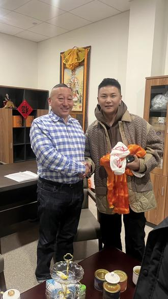
诊脉实录被患者称作“人体CT机”的四朗青佩院长，为知名歌手三智才让全面检查与诊断。
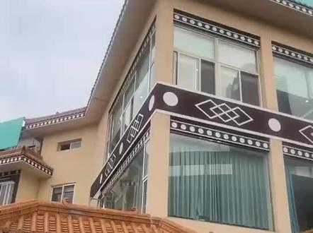
医院纪实专家到访成都喜马拉雅藏医医院，青佩院长介绍医院发展与藏医药特色。
国际歌唱家走进冰城藏医馆，参观藏药材与文物博物馆，赞叹国家扶持民族文化。
康巴卫视《向巴聊天》2023年6月9日播出，四朗青佩院长与主持人向巴老师畅谈藏医创业人生，25分钟高清完整版。
 康巴卫视
康巴卫视
2023年6月康巴卫视全球首播：老藏医忠登郎加与四朗青佩院长在《向巴聊天》畅谈藏医药文化、解析民族医药经典，共话世界非遗藏药浴。
视频来自院长官方账号与康巴卫视官方节目（腾讯视频高清完整版），点击卡片前往观看
一条跨越三百年的传承线：从乾隆御前藏族御医，到藏医世家的当代传人；从雪域高原，到北国冰城与天府之国。
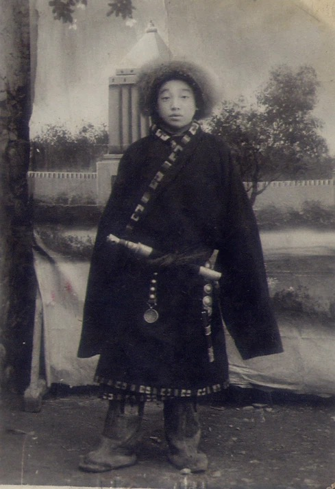
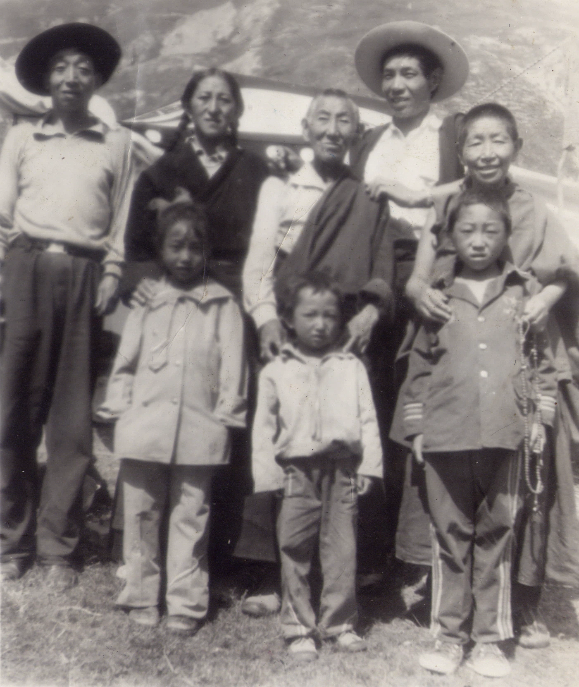
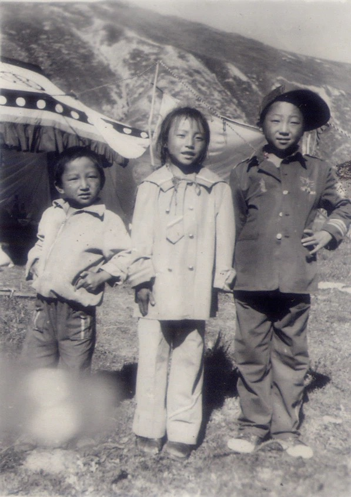
出生于四川甘孜炉霍的藏医世家。家族传承可溯至清乾隆时期御前藏族御医阿托（获赐“代”姓、黄马褂），舅爷曾任班禅与达赖的保健医生，母亲系南派藏医发祥地德格土司后人。
在父亲要求下研习家族藏医传承，自幼诵读《四部医典》等传世经典，筑牢藏医药根基。
先后赴德格、拉萨、青海，师从措如·才朗、拉门却吉降措、卡洛等藏医大师深研藏医药，一路学习一路实践。
在西藏藏医学院系统研习藏医全科与内科；赴重庆医科大学研学“藏、中、西”三医结合，并在四川省人民医院、北京同仁医院临床工作近十年。
年仅24岁，在国家统战部与民宗委支持下、经扎日活佛指点，于哈尔滨创办哈尔滨德格藏医医院，成为将藏医药成规模推广到内地的先行者。
2003年非典期间被抽调至小汤山医院执行救治任务；2008年汶川地震率队送去首批救援药品与生活物资；2010年玉树地震再送救援物资。
2006年医院正式获批，成为东三省首家、唯一国家二级藏医综合医院；2019年扩建迁址通乡街4号；2020年晋级国家二级医院，建筑面积达1.2万平方米、开放床位500张。
中联第三次国际藏医学术研讨会在美国哈佛大学医学院召开，四朗青佩作为东北地区藏医学代表、心脑血管医学专家应邀出席，与来自全球80多个国家和地区的顶级藏学专家、哈佛医学院终身教授等共研藏医药发展趋势。
作为少数民族医生先进个人代表，出席第四次全国少数民族医药会议，为民族医药发展建言献策。
新冠疫情暴发后，向四川省中医药管理局提交“清肺解瘟”藏药组方并率先应用（甘孜州78例确诊患者中76例使用藏药，参与率达97%）；从国外筹募口罩空运回国，累计捐赠约200万元防疫物资。
在四川省委、省政府与省中医药管理局支持下，于天府之国成都创建成都喜马拉雅藏医医院，形成东北、西南两大中心，构建覆盖全国的藏医药服务网络。
获评国家级非物质文化遗产“藏医药（甘孜州南派藏医药）”州级代表性传承人，投身非遗保护与活态传承，带徒授艺、学术普及。
四朗青佩院长家族父系、母系均为藏族地区（嘉绒、康巴）头人，历代思想开明、家风纯良。红军长征过甘孜时期，家族侍奉的扎日活佛率觉日寺僧众倾力支援红军，与刘伯承结下深厚情谊——这段红色往事，是藏医世家最珍贵的精神底色。
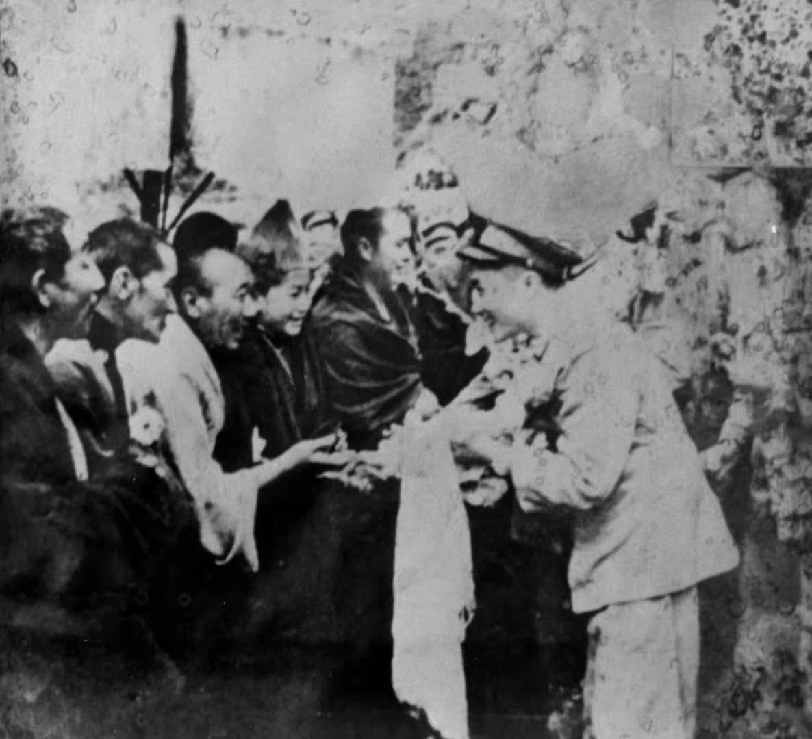
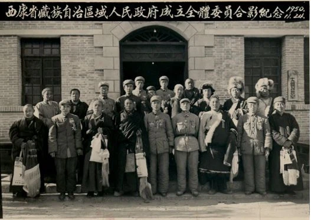
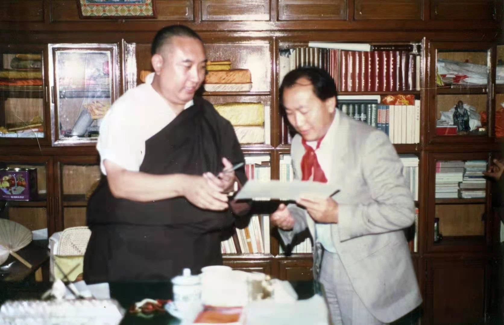
四朗青佩家族藏医传承有明确记载和佐证，可追溯至清朝乾隆打金川时期：祖上作为地方知名藏医被乾隆召集随军，后随军同返北京，因医术高超被赐名戴姓，人称“戴喇嘛”，供职太医院。戴喇嘛与其子戴世富均在北京行医，戴世富之女（太奶奶）回到甘孜炉霍，携回大量藏、汉、蒙文医书，部分至今仍由家族保存。
祖辈行医 · 桃李桑梓四朗青佩的爷爷、父亲均在以理县为中心的阿坝地区和以炉霍为中心的甘孜地区民间、医院、寺庙行医行善，在当地影响深远。父亲戴世杰毕业于中央民族大学（原中央民族学院），1957年作为首批民族地区青年储备干部，受到毛泽东、朱德、周恩来、邓小平等中央领导接见，后因照顾母亲返回阿坝继续行医。
1936 · 红军长征与第四世扎日活佛1936年红军长征自道孚入炉霍，觉日寺第四世扎日活佛深明大义，拥护欢迎红军，与刘伯承等红军将领建立深厚感情。扎日活佛亲笔致信甘孜寺、大金寺、东谷、甘孜、卡娘地区宣传红军主张；红军驻留期间，寺内僧众捐赠粮食近30万公斤、酥油1400余公斤、错疆200匹、长20米藏毯80张、长15米毡毛毯50张；红军北上时再赠珠宝银元、20顶帐篷、91口铜锅、40头牛、20匹马及马鞍、皮火筒、斧头等物资，并派仁青尼格、呷巴两位向导护送红军（二人后来失去联络，可能牺牲在北上途中）。
刘伯承与扎日活佛互敬哈达，握手致谢：“对您和寺院如此真诚的欢迎红军，我们表示十分感谢！”临行赠旗留念，并将14名小红军托付给扎日活佛照护。刘伯承评价：“觉日寺及其所辖两个部落、扎日活佛，为红军提供了无私的支援和周到的服务，与我们建立了鱼水情谊。”
第五世扎日活佛 · 爱国爱教的一生由其家族侍奉、自小在家长坐床的第五世扎日活佛继续为党的事业作贡献：1950年任西康省藏族自治区人民政府第一届委员（新中国成立后建立的第一个地专级民族区域自治政权）；同年迎接18军军长张国华；1953年参加国庆观礼，受到毛泽东主席、周恩来总理接见；改革开放后回到祖国传播藏文化、倡导爱国爱教，修建慈善医院、养老院、孤儿院，长期资助藏区大学生不计其数，还为藏地群众免费开办慈善缝纫、厨艺、汽修学校。88岁高龄的第五世扎日活佛，至今仍在四朗青佩家中修行，整理编撰藏文化典籍。
从“被传承者”到“传承者”——四朗青佩院长将家族三百余年的藏医智慧与国家级非遗南派藏医药，手把手、口传心授地传给年轻一代，让千年藏医药后继有人。
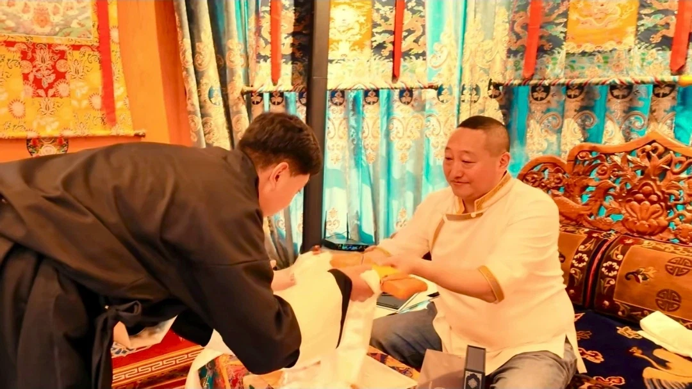
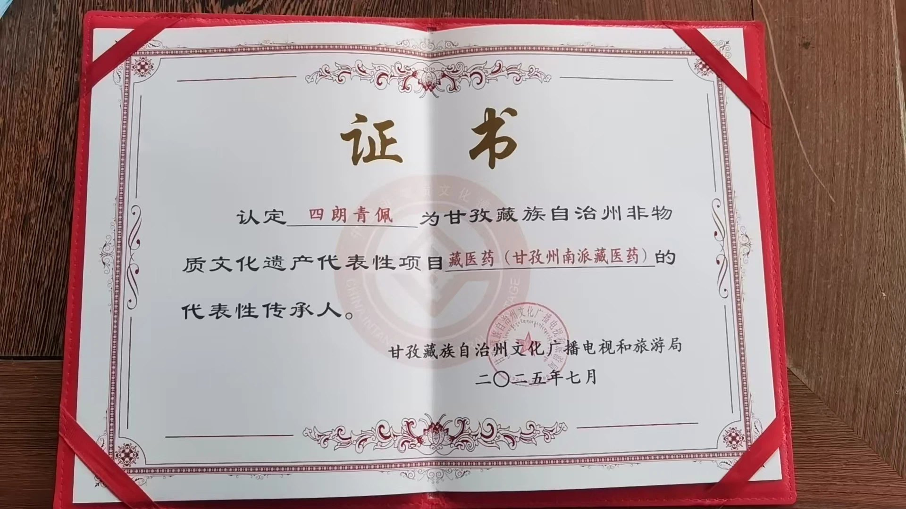
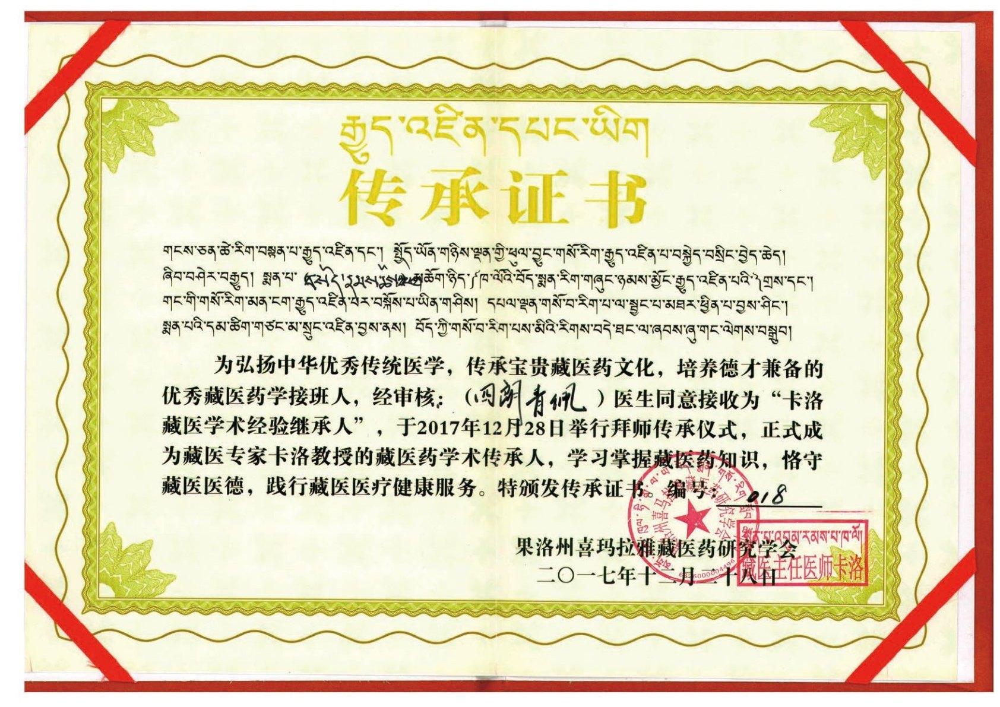
四朗青佩出身藏医世家，家族传承可溯至清乾隆御前藏族御医。他幼年随父研习家族藏医传承，后于2017年12月28日拜师藏医专家卡洛教授，正式成为“卡洛藏医学术经验继承人”，系统研习《四部医典》与南派藏医药精髓；2025年7月获甘孜藏族自治州文化广播电视和旅游局认定为非物质文化遗产代表性项目“藏医药（甘孜州南派藏医药）”代表性传承人。
身承重托，更肩负薪火相传之责。青佩院长每年培训10名师承学生，以传统师承模式带徒授艺——从辨识雪域药材、诵读经典，到临证号脉、炮制藏药，全程口传心授、亲手示范，为藏医药事业培养后继人才。
诵读《四部医典》等传世经典，研习家族珍藏的三百年藏、汉、蒙文医书与秘方。
脉诊、舌诊、尿诊辨证施治，传承“望闻问切”的藏医诊法精髓。
雪域药材辨识、采集与炮制工艺，含珍珠、珊瑚等名贵藏药的配伍制备。
藏药浴（五味甘露）、霍尔麦热熨、火灸、放血等藏医外治技法实操带教。
走出高原三十余年，青佩院长始终牵挂着藏区藏医药的教学与教育——多次深入藏区校园与教学一线，看望师生、交流传承心得，以实际行动反哺雪域故土。
从雪域高原到内地课堂，四朗青佩院长始终心系藏医药的传承教学，走进藏区校园与课堂，关心青年一代的藏医学习与成长。
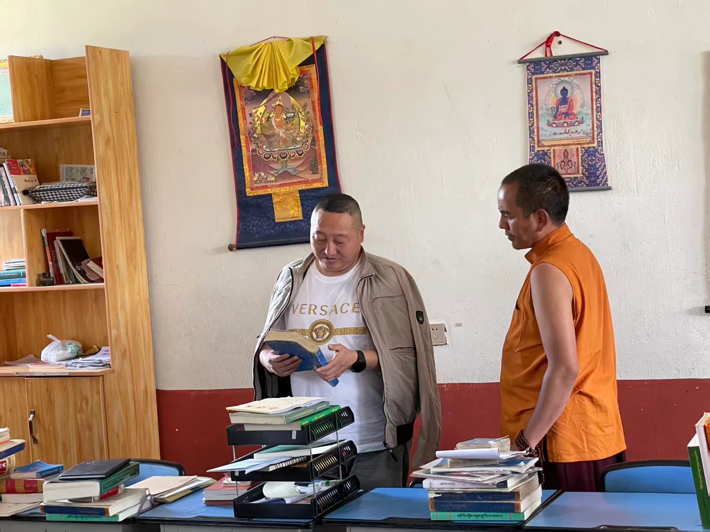
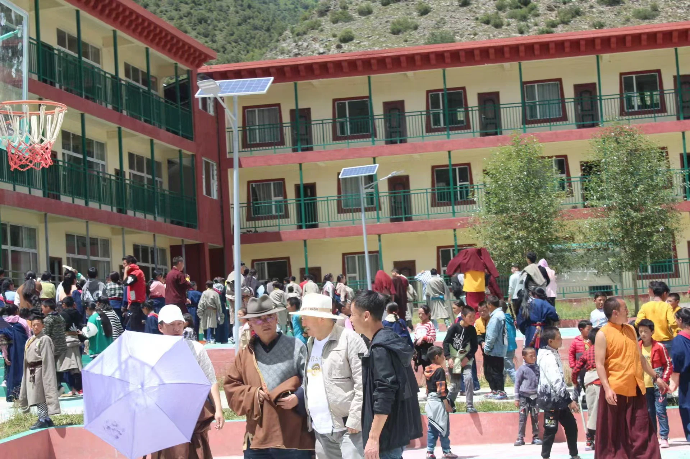
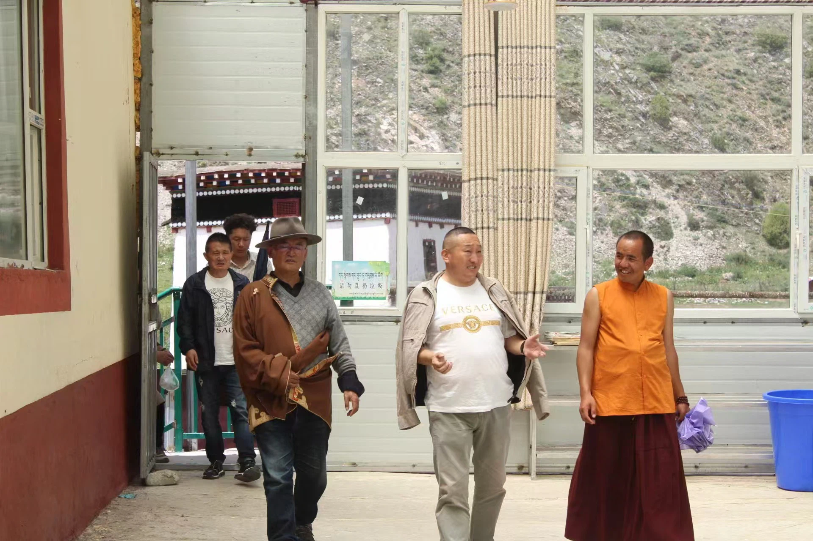
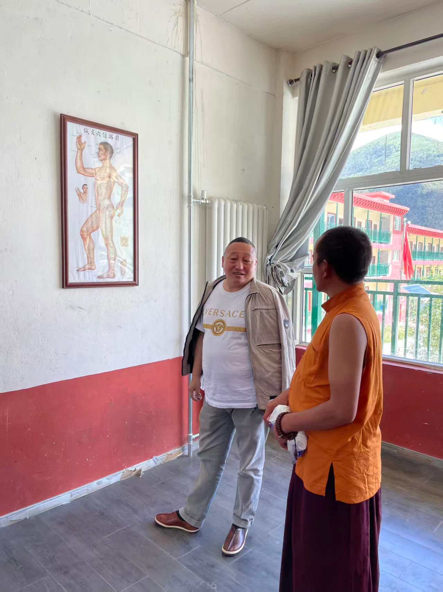
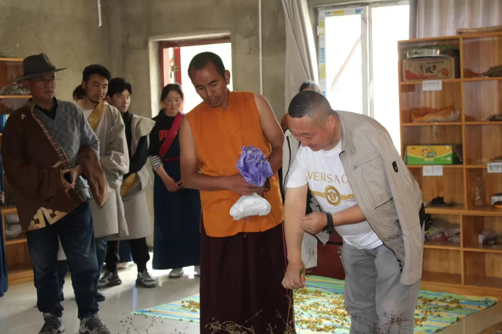
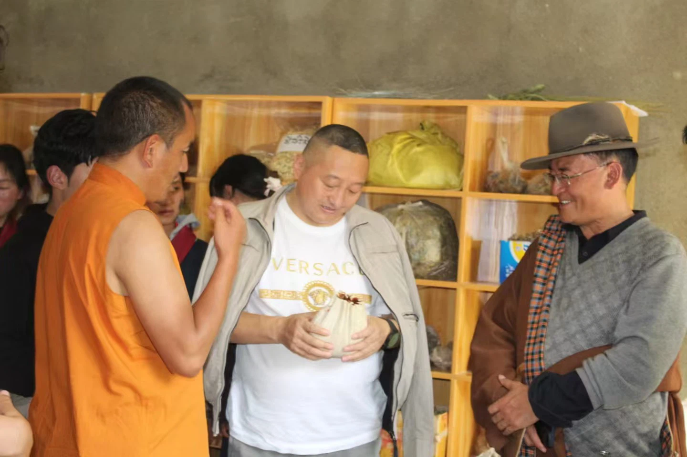
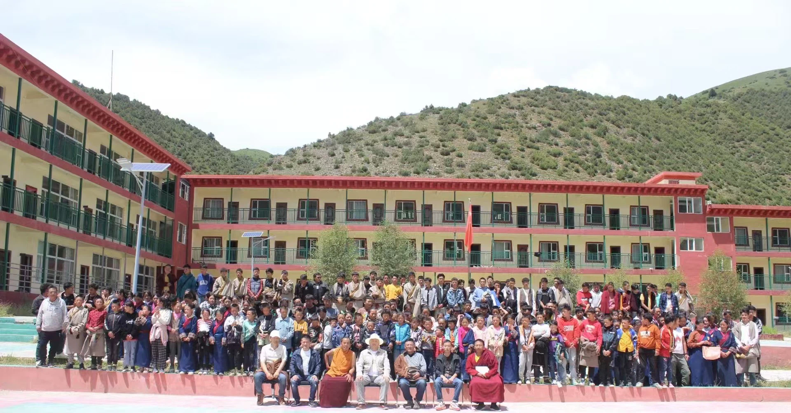
从雪域高原走出来的青佩院长，最挂念的始终是藏区藏医药的教学与传承——深入校园、看望师生、交流授业，为藏医药后继有人尽一份力。
藏医学是拥有两千三百余年历史的世界四大传统医学之一。以“三因学说”为理论基石，配以天然雪域药材与独特炮制工艺，形成完整的诊疗体系。

藏语称“泷沐”，以圆柏叶、黄花杜鹃、水柏枝、高山麻黄、白野蒿等“五味甘露”熬制药液沐浴，通过毛孔渗透调理气血。2018年“藏医药浴法”列入联合国教科文组织人类非物质文化遗产代表作名录。
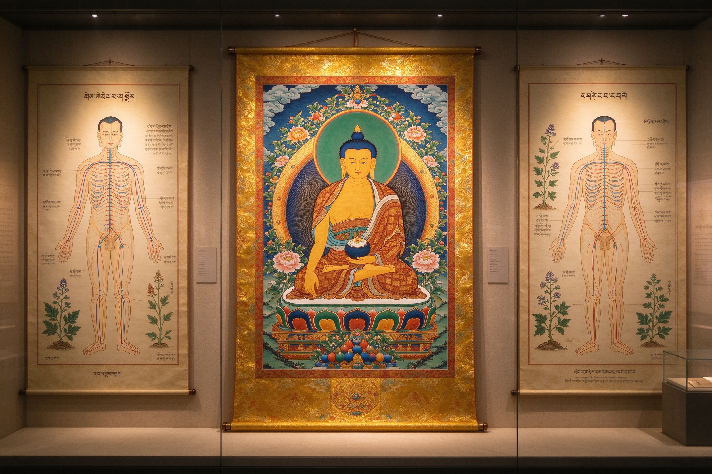
藏医认为健康源于“隆、赤巴、培根”三因的动态平衡，并据此辨证施治。舌诊、脉诊、尿诊是传承数千年的经典诊法，院长因号脉精准被誉为“人体CT机”。
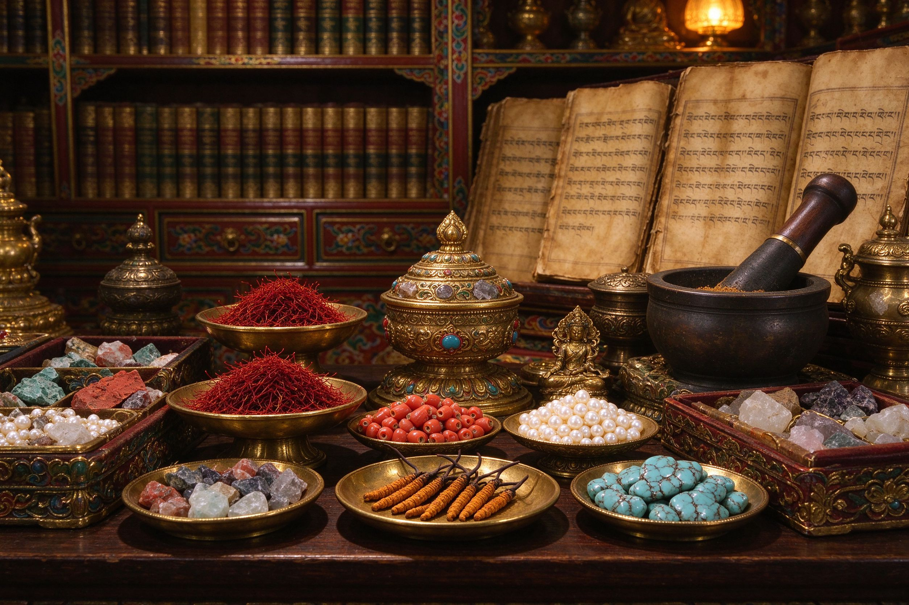
藏药多采自海拔4000米以上雪域高原，纯净高活性。家族珍藏满、蒙、藏三文医典秘方，独有藏药配方400余个；参与国家级课题《伏藏大经典·藏医药部分》整理校对，让失传半个多世纪的名贵藏药“佐塔”重新面世。
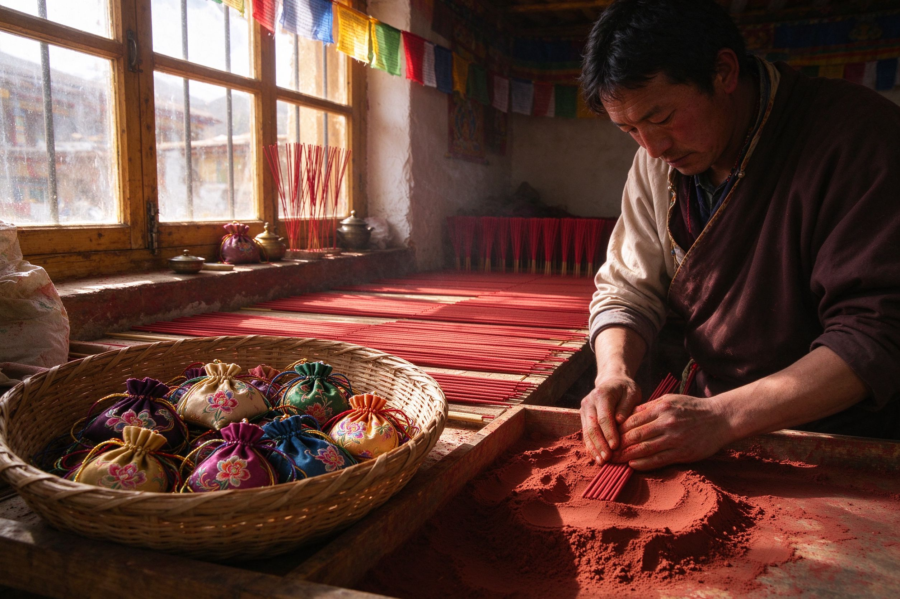
白脉涂擦、霍尔麦热熨、金针、火灸、放血等特色外治疗法传承千年；藏香、防瘟药囊等传统防疫智慧在历次疫情中屡建功勋。
从1997年在世界医学杂志发声，到参与国家级重点科研课题——青佩院长以理论与临床并重的方式，让千年藏医药走向科学化、现代化与国际化。
在世界医学杂志发表，将藏医诊疗智慧推向国际学术视野，一经发表即引起世界医学界广泛关注。
世界医学杂志选取60例心隆病患者分组对照研究，发表后荣获“年度百佳优秀学术论文”金奖，验证藏医药独特优势。
《中外医疗》第8期 · 学术金奖系统梳理藏医药入内地的现状与前景，为民族医药跨区域发展提供理论参考。
行业论文记录以哈尔滨德格藏医医院为代表的藏医药内地落地实践，探索“传承+创新”的发展路径。
行业论文整理一代藏医名家忠登郎加的诊疗经验，让经典临证智慧有据可查、薪火相传。
个人专著参与国家级重点科研课题整理校对，带领团队攻克工艺难关，让失传半个多世纪的名贵藏药“佐塔”重新面世。
国家级重点科研课题2025年12月，四朗青佩院长携个人专著《跟着藏医学养生》由四川民族出版社出版发行，并于成都举办新书发布暨签名赠书仪式——以通俗易懂的方式，把千年藏医药的养生智慧带给千家万户。
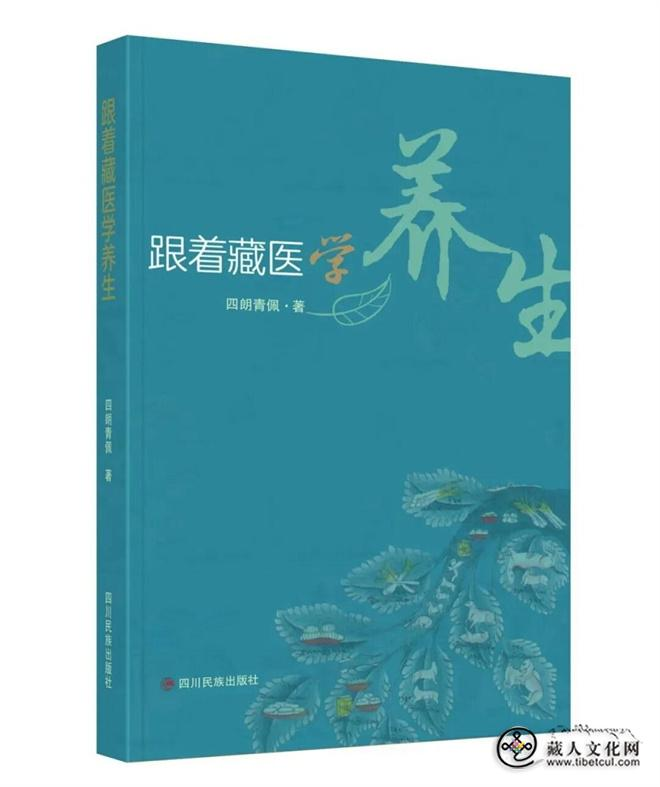
本书摒弃艰深的理论堆砌，直接切入藏医核心——"三因"（隆、赤巴、培根）学说，以现代语言清晰阐释：人体如何像一个小宇宙与自然共振，三因如何维系我们的健康天平。
书中精心融入多幅珍贵的藏医曼唐（医学唐卡）细节插图。这些不仅是艺术品，更是蕴含诊断、治疗智慧的图谱——让读者在欣赏藏族独特美学的同时，直观理解身体与自然的连接。
曼唐细节插图 · 藏式美学全书从怎么吃、怎么动，到如何调节情绪、安排起居，将藏医理论转化为具体、可执行的日常养生建议：契合季节与体质的饮食方案、舒缓的起居节奏、简单的身心调节术。
填补藏医养生通俗读物空白藏医专家四朗青佩院长携新作举办新书发布暨签名赠书仪式。该书以通俗表达、实用场景为特色，是藏医药守正创新、贴近大众的生动实践。
新书首发 · 签名赠书引导读者在快节奏中找回自己的节律，在物质丰富时学会选择，实现身与心的和谐统一——这正是藏医药"预防为主、身心同调"养生智慧的当代呈现。
身心灵 · 和谐统一整理一代藏医名家忠登郎加的诊疗经验，让经典临证智慧有据可查、薪火相传（详见上方"学术成就"板块）。
个人专著2025年12月11日，《跟着藏医学养生》新书发布暨签名赠书仪式在成都举行——青佩院长为读者亲笔签名、赠书交流，藏医药养生智慧走进千家万户。
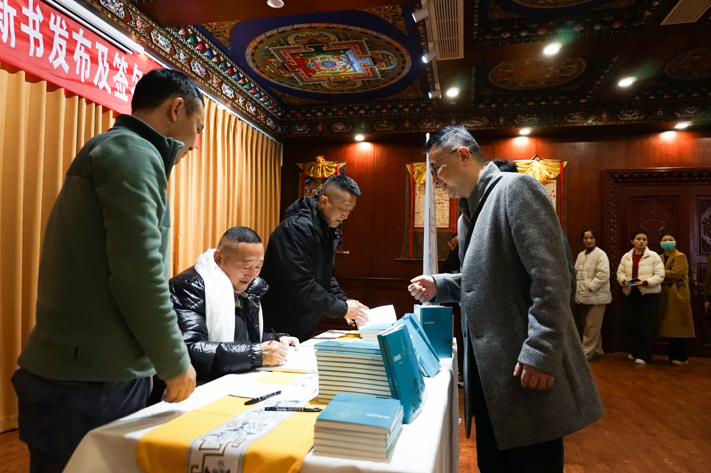
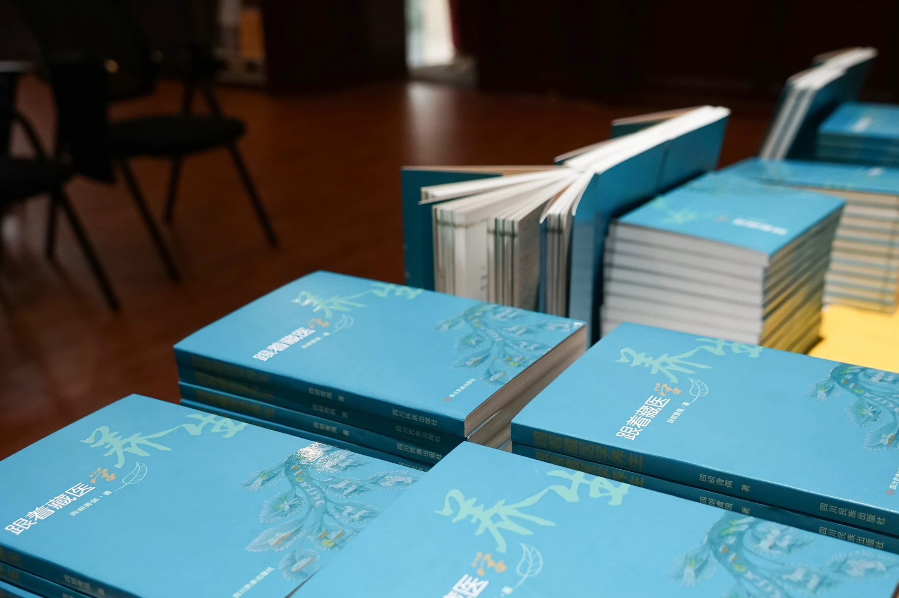
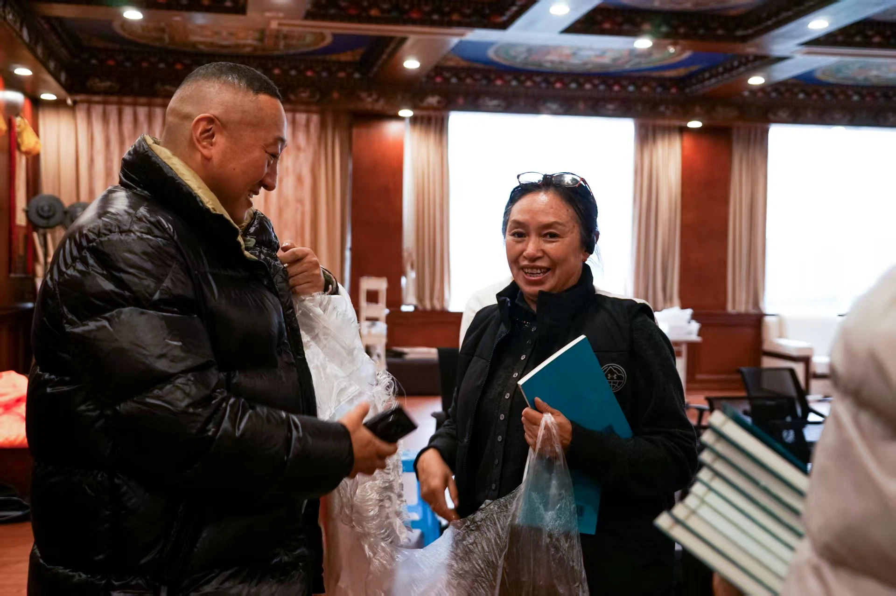
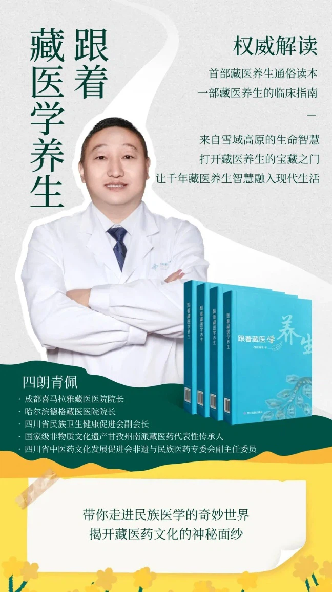
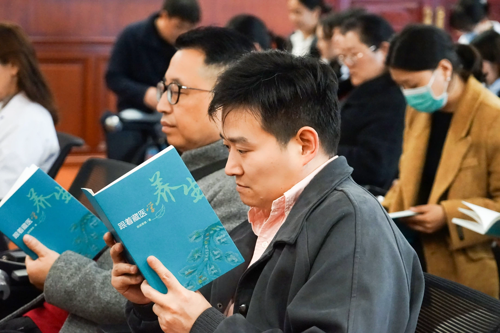
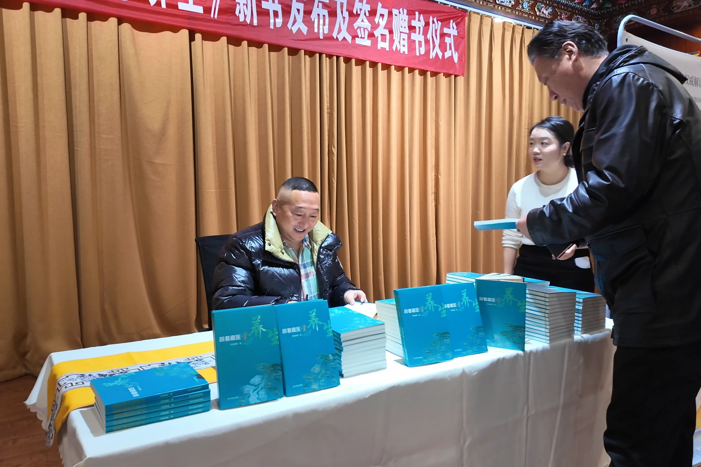
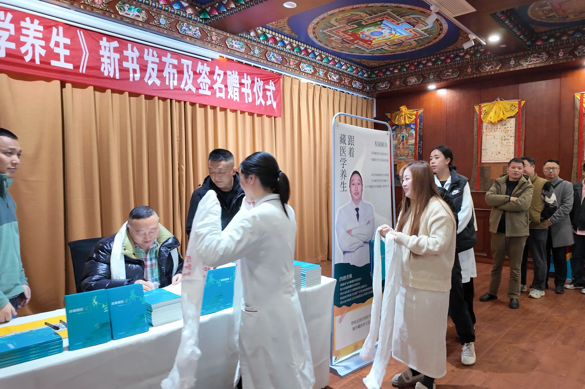
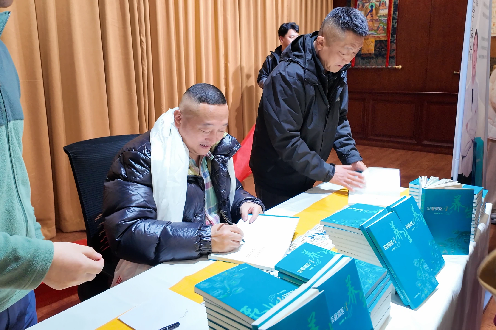
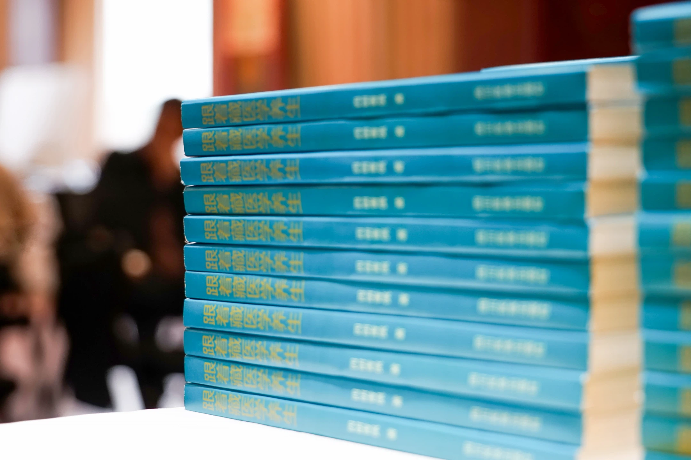
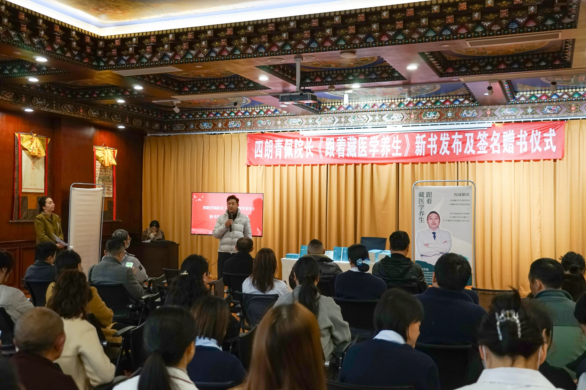
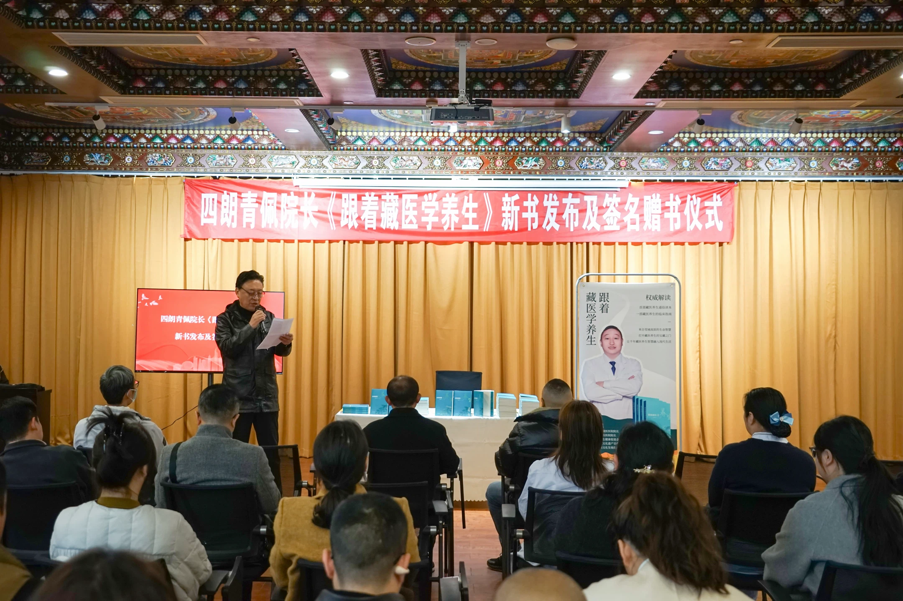
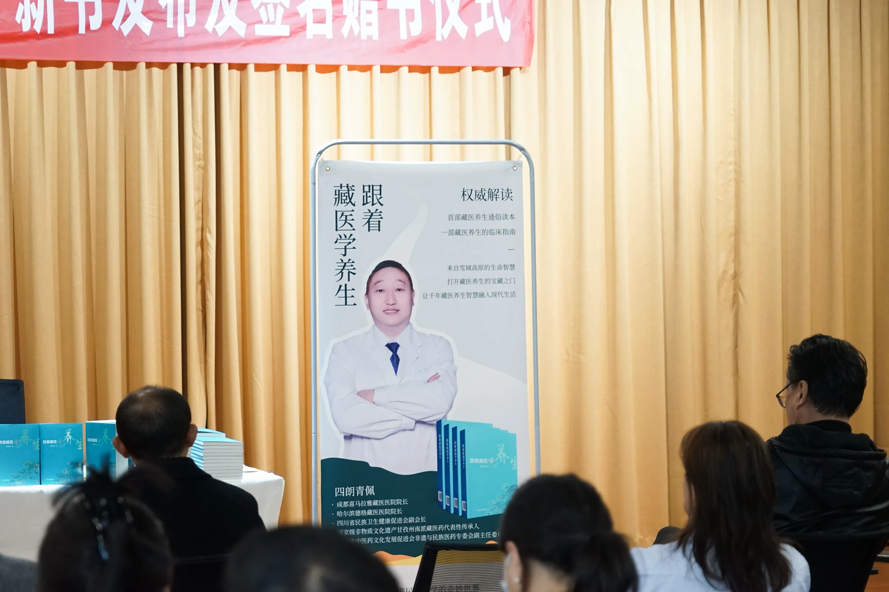
三十余载行医，数万患者见证。以下为哈尔滨德格藏医医院四朗青佩院长及团队的真实诊疗案例记录（患者隐私已保护，均采用化名）。
患者情况：鲜族老人，多年痛风，腿上尿酸结石如鸡蛋大小，心脏大收缩无力，多处求医无效。
好转过程：青佩院长制定方案并嘱戒酒，藏药三月后嘌呤指数明显降低，配合“放血疗法”排嘌呤排结石，几十年痛风痊愈未复发。
患者情况：腿关节肿痛伴心脏病、淋巴病10年，经更尕文毛医生治疗。
好转过程：4次藏医放血疗法+藏药：第1次肿胀消退30%夜能安睡；第2次疼痛降70%弃拐行走；第4次关节功能恢复、心脏病症状消失；3月随访淋巴结节缩小80%无复发。
患者情况：双膝疼痛难当，拄拐也迈步困难。
好转过程：藏药治疗后双膝疼痛逐渐减轻，最终扔掉拐杖自由行走，甚至能小跑。青佩院长辨证：关节气血不畅，藏药活血化瘀、通络止痛。
患者情况：脑梗后遗症，肩背痛无法入睡，多家医院均诊为“肩周炎”久治不效。
好转过程：青佩院长细查发现实为颈神经根型颈椎病。综合疗法三天80%疼痛消失，能睡整宿觉，七天康复出院。
患者情况：顽固性肩周炎辗转治疗无效。
好转过程：藏医团队“金针+霍尔麦+热灸”三联外治配合情志疏导：1周夜间痛减60%，2周肩关节外展达120°，3周活动度恢复95%，患者以锦旗致谢。
患者情况：腰腿剧痛，外院久治无效。
好转过程：针灸师张华玉藏医针灸：首次即见效，住院数日2021年9月痊愈出院并赠锦旗，腰腿疼痛完全消失。
患者情况：关节畸形无法行走，多家医院无效。
好转过程：“藏药浴+口服藏药”一年：3个月肿胀消退50%可扶拐行走，6个月晨僵缩至15分钟独立行走200米，12个月功能恢复80%生活自理。
患者情况：双下肢疼痛拄拐、手关节畸形肿胀、眼底出血。
好转过程：“药浴+内服+外治”两周：3天腿痛减50%脱离拐杖，10天手部肿胀消退眼底出血缩小60%，14天平地行走自如。
患者情况：膝关节炎伴全身湿气重、肥胖。
好转过程：藏药浴12天：3天膝盖肿胀消退30%，7天全身沉重感消失，12天关节自如、腰围减5cm，一浴多效。
患者情况：右侧肢体失控颤动，确诊腔隙性脑梗+多支动脉狭窄+高血压3级，三甲医院建议转院。
好转过程：转至德格藏医医院住院，藏药约60天右侧肢体晃动基本消失，吃饭穿衣解手自主完成，可每日小区锻炼。
患者情况：头晕头痛、精神萎靡。
好转过程：“藏药内服+五味甘露浴+颈部推拿”3周症状完全消失。藏药七十味珍珠丸改善脑循环、二十五味珊瑚丸缓解头痛。
患者情况：2021年4月确诊腔隙性脑梗合并轻度脑萎缩。
好转过程：青佩院长主导藏药治疗1年，2022年5月颅脑CT平扫“未见明显异常”，影像学完全逆转；其配偶甲状腺结节亦获临床治愈。
患者情况：2009年心脏主动脉管腔局部堵塞50%-60%，北京阜外建议可支架或不做。
好转过程：未下支架，改服藏药两年，2015年11月大庆油田总院复查：原50%-60%堵塞明显改善。
患者情况：2018年头晕恶心、阵发呼吸困难、胸骨压迫痛、活动障碍，确诊心梗。
好转过程：青佩院长开具七味珊瑚丸、八味沉香丸、二十味沉香、二十五味珍珠丸等时辰服药方案，症状明显好转。
患者情况：2019年脑出血术后语言障碍、左侧偏瘫、抑郁焦虑，常规康复无效且禁活血药。
好转过程：角巴太医生以二十味肉寇丸、七十味珍珠丸联合针灸：1月睡眠提升手抖降50%，2月可独立行走吐字恢复70%，3月精神症状消失生活自理达90%。
患者情况：肢体偏瘫、语言障碍、痰多气短、便秘乏力。
好转过程：藏药浴+霍尔麦外治+藏成药：10天患肢握力恢复，20天语言清晰度70%痰量减90%，30天独立行走生活自理完全恢复。
患者情况：2021年3月CT：右肺上叶占位考虑恶性，西医中医治疗无显效。
好转过程：曼巴四郎教授藏药一个疗程：肿瘤从19×21mm缩小为12.33×10mm，几乎小一半。
患者情况：跑了很多地方吃药无效，人已抑郁。
好转过程：青佩院长三副藏药：肿瘤从9.1×8.7mm缩小到4.6×1.7mm小了一半，焦虑烦躁消失，睡眠、嗓子好转。
患者情况：确诊子宫癌、子宫腺瘤合并崩漏，拒绝西医手术。
好转过程：藏药组方+心理疏导：1个月肿瘤缩小60%崩漏止，3个月病情稳定症状全消，6个月随访无进展。
患者情况：放化疗后脱发、剧痛。
好转过程：青佩院长藏药：1月疼痛降70%可安睡，3月CT肿瘤缩小40% CA19-9降65%，1年随访病情稳定，家属反馈超预期。
患者情况：被多家医院判定晚期。
好转过程：藏药系统治疗两年：6月癌痛消失，12月肿瘤缩小70% CEA正常，24月胃肠镜证实结肠癌灶消失、胃癌变胃溃疡，36月PET-CT未见复发。
患者情况：脸上痘上长痘，花数十万含汞铅激素药仅缓解，婚姻濒临破裂。
好转过程：内服+清洗双管齐下：一周奇痒消失，两个月彻底治愈保住婚姻，如今孩子一岁多常来感谢。
患者情况：面部皮肤溃烂流脓，北京上海黑龙江各大医院激素抗生素均无效，成绩跌至倒数。
好转过程：青佩院长七、八天药内服+外洗：两三天停止化脓，七八天溃烂面积变小免疫力改善，近两月痊愈找回自信成绩重回前茅。
患者情况：真菌感染3年多，痒痛难耐皮肤老化僵硬，多种治疗无效。
好转过程：南秀医生藏式酥油热疗外治21天：痒痛消失，老皮脱落软化。祛除风、邪、毒三病理。
患者情况：2019年发病，肺叶粘连累及心脏，呼吸困难憋得浑身哆嗦，每晚需吸氧睡觉，多家医院无从下手。
好转过程：2019年9月就诊，藏药两个月：从起不了床走不了路到不怕走路、胸不憋闷、不再用制氧机，精神状态恢复正常。
患者情况：10岁不会喊爸妈、不会看电视洗澡，吃饭需喂食。
好转过程：青佩院长开七十味珍珠丸等五种藏药，初期每十天复诊调配比：一年半后可独立行走、调台看电视、清晰呼叫父母，正常上学成绩提升。
患者情况：双脚溃烂流脓，双腿肿胀青紫，坐轮椅生活不能自理，西医无效。
好转过程：青佩院长判血管堵塞，多次放血疗法+藏药：血管病痊愈，抛开轮椅自如行走，生活恢复正常。
患者情况：腰腿剧痛躯体屈曲畸形，伴心脏牵涉痛，多家三甲医院无效。
好转过程：公保副院长藏药组方：1周疼痛降40%可平卧，2周扶拐行走50米，3周腰杆直立独立行走，心脏不适消失。
患者情况：几乎跑遍全国甚至去美国无起色，食道肌肉无法收缩面临饿死。
好转过程：青佩院长精心配药适时调方，八九年医患共同努力病情有效控制，健康存活正常上班。藏药七十味珍珠丸、如意珍宝丸、五鹏丸等。
患者情况：结婚五年未孕，月经不调、输卵管积水、子宫内膜异位症，各大不孕不育医院花好多钱无效。
好转过程：青佩院长详查发现月经不调为根源，藏医外治+食疗+内服藏药彻底调理，成功怀孕。
患者情况：2021年7月CT胸部扫描异常，长时间西医治疗无改变。
好转过程：藏药4个月，2022年1月北大荒集团总医院复查CT“胸部平扫未见异常”。
患者情况：甲状腺包块有鸡蛋大小。
好转过程：曼巴四郎教授按“喉肉核症”辨证，软坚散结藏药三副：鸡蛋大包块基本不见，患者喜出望外。
患者情况：肌酐值越来越高，大医院建议透析。
好转过程：罗尔西医生藏药5天血肌酐从495降至437.3μmol/L，第十七八天直降到373μmol/L，迅速下降。
患者情况：2021年11月检测乙肝病毒定量6.10E+0.5IU/ml。
好转过程：曼巴四郎教授综合调理藏药组方，服药一个月零六天病毒定量降至4.23E+0.3IU/ml。
患者情况：男：心慌心率过速、脾胃不合日排便五六次、高血压；女：浑身疼、胃不好、睡眠差、没劲。
好转过程：男服组方四五天心脏不适好转、一副药脾胃见效；女服18天组方浑身疼痛等明显改善。
患者情况：丈夫顽固性头痛2年；母亲全身湿疹溃烂；父亲轻微脑梗；弟媳慢性疲劳。
好转过程：公保副院长脉诊组方：丈夫1剂藏药头痛愈随访1年无复发；母亲2剂90%皮损消退；父亲2周麻木减轻肌力恢复；弟媳1周疲劳降60%。
患者情况：冠心病、心绞痛、糖尿病、腰间盘突出。
好转过程：藏药综合治疗显著改善，出院赠锦旗“医德高尚、服务贴心”。七十味珍珠丸改善冠脉循环、六味能消胶囊调节糖脂代谢。
患者情况：心脏病且长期失眠。
好转过程：公保东知副院长藏药组方：七十味珍珠丸改善心脏血液循环、二十味肉蔻丸调节神经，结合脉诊与放血疗法，心脏和睡眠极大改善，赠锦旗致谢。
患者情况：血崩2年多方治疗无效。
好转过程：公保东知副院长藏药5天完全止血（较预期提前10天）：1天出血减半，5天止血血红蛋白回升110g/L，3月随访周期正常未复发。
患者情况：原发性痛经、月经不调伴痤疮失眠3年，中西医反复发作。
好转过程：青佩院长藏药组方+雪莲花茶饮3个月：1月痛经降70%，2月痤疮减90%睡眠6小时，3月痛经消失周期规律。
患者情况：手脚微颤、卧床不起、神志不清，需安眠药入睡，血压不稳。
好转过程：曼巴四郎教授藏药4个月：症状消失，生活自理，睡眠改善无需安眠药，血压稳定125/85mmHg，头发变黑骨折好转。
患者情况：历经275天藏药治疗，断药后无复发。
好转过程：罗尔西医生：三个疗程后开车远行工作交流无障碍，无药物依赖，心理状态平和。佐塔安全有效。
患者情况：受凉后胃痛胃胀口苦口臭，睡眠差荨麻疹免疫力低。
好转过程：曼巴四郎教授辨证赤隆尼隆察隆失衡：1月胃痛荨麻疹好转，3月症状未再发作，免疫力提高。
患者情况：胆囊结石1.7cm，胃脘间断疼痛、胸闷心悸、疲倦乏力。
好转过程：罗尔西医生藏药：6月胃疼缓解打嗝消失，13月结石缩小胆囊沉积物消失，21月记忆力增强睡眠改善。
患者情况：双肾囊肿结石、慢性肾衰、四肢水肿关节变形。
好转过程：曼巴四郎教授藏药：7月肌酐降至174μmol/L水肿好转，9月降至109.5μmol/L瘙痒肿块改善。
患者情况：乙肝病毒DNA 8.8E，疲倦乏力情绪不佳。
好转过程：罗尔西医生藏药：2月降至5.99E，3月5.29E，4个半月3.11E，乏力缓解情绪改善。
患者情况：疲乏倦怠、胸闷气紧、甲状腺结节，长期服优甲乐。
好转过程：曼巴四郎教授藏药：3月乏力改善胸闷缓解，5个半月关节疼痛疲劳进一步改善，体力提升睡眠提高。
患者情况：体重100kg，BMI31.56。
好转过程：罗尔西医生：15天精力充沛，2.5个月体重开始下降，综合减至190斤，代谢功能改善。
患者情况：双侧乳房胀痛，右季肋部胀痛，诊为乳房结节。
好转过程：曼巴四郎教授藏药：2月胀痛改善，5月持续时间缩短，8月症状进一步缓解。
患者情况：严重失眠几分钟即醒，伴乳房结节疼痛。
好转过程：罗尔西医生藏药：个半月睡眠5-6小时，血压稳定，结节定期检查。
患者情况：反复咳嗽有痰、胸闷乏力。
好转过程：曼巴四郎教授：治疗2个月咳嗽频率次数明显减少，乏力消失。
患者情况：感冒后发热咳嗽咳痰带血，诊为支气管扩张。
好转过程：罗尔西医生：服药一个半月咳嗽明显减少、痰少、精神状态良好。
患者情况：二型糖尿病、中风、脑萎缩后遗症，生活不能自理。
好转过程：曼巴四郎教授：8天有排便意识，15天可自行吃饭愿交流，1个月起身无需缓冲、单手端碗。
患者情况：脑梗10年，长期西药，伴抑郁焦虑加重。
好转过程：罗尔西医生藏药4个月：手脚微颤、卧床不起、记忆好转，生活自理情绪稳定，头发变黑。
患者情况：睡眠障碍、夜尿频多。
好转过程：曼巴四郎教授：21天深睡眠起夜7次减为4次，5个月基本三次，睡眠质量提高。
患者情况：前列腺肥大、便秘。
好转过程：罗尔西医生：1月大便改善，2月进一步缓解，5月明显改善，半年基本消失。
患者情况：湿疹就诊。
好转过程：曼巴四郎教授：2月皮损瘙痒减轻，3月进一步缓解，排毒能力增强。
患者情况：颈背面部散在皮疹瘙痒，秋冬加重，中药无效。
好转过程：罗尔西医生：1月皮疹改善，2月基本消失瘙痒减轻。
患者情况：偏瘫就诊。
好转过程：曼巴四郎教授：1月肢体力量加强可短时行走站立，5月正常行走，睡眠心理明显好转。
患者情况：儿时高烧脑膜炎昏迷一周，初二发现癫痫。
好转过程：罗尔西医生：服药后症状好转，舌下脉络瘀堵减轻，三因平衡恢复。
患者情况：食用烧烤致痛风复发，右脚前掌疼痛，尿酸偏高。
好转过程：曼巴四郎教授：10天疼痛减轻，4个月体重减轻尿酸降至100μmol/L。
患者情况：类风湿性关节炎、血沉高。
好转过程：罗尔西医生：1月关节疼痛减轻，2月进一步缓解，3月肿痛基本解除指标恢复。
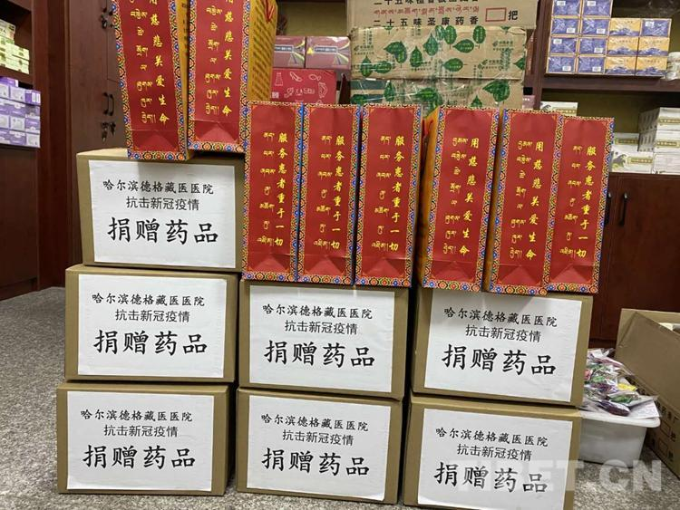
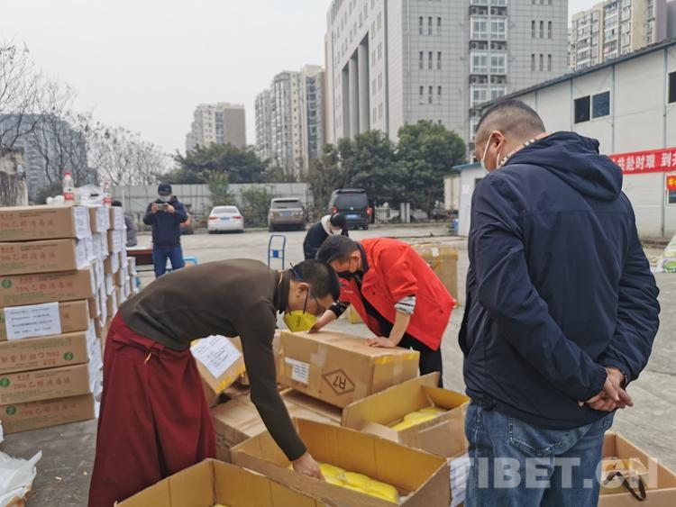
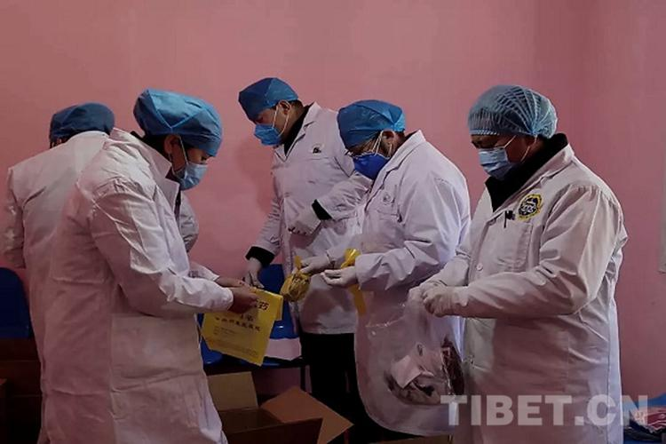
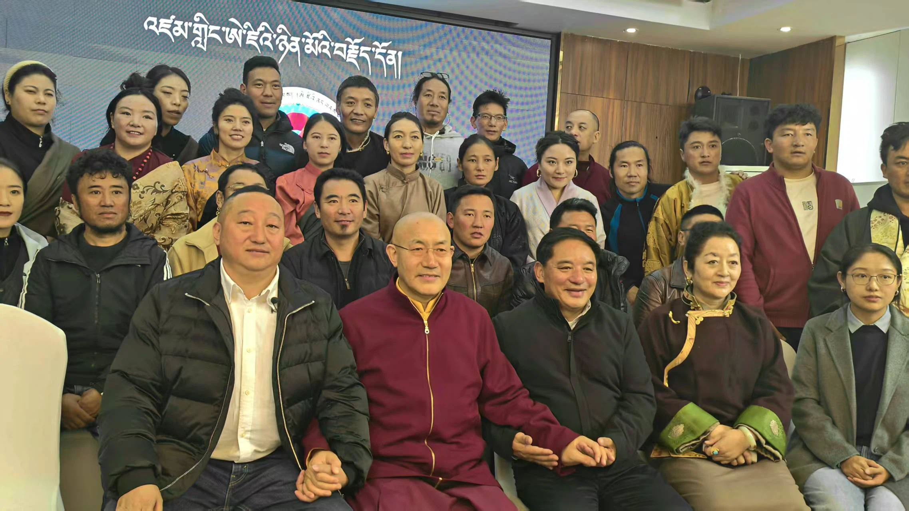
“不为良相，便为良医。”二十余年来，青佩院长把工资与心血倾注于公益慈善，被媒体评价为“民族脊梁”式的医者。
“此生，能够以本民族医药救治普天下的病患，是我最幸福的事。” —— 四朗青佩
在石渠县瓦须乡卫生院前，藏族群众为青佩院长献上哈达、授予「民族健康大使」荣誉牌匾——“千里赴雪域，温暖万家心”，是藏区老百姓对他多年来免费义诊、免费赠药、帮扶穷苦乡亲最朴素也最真挚的肯定。
青佩院长常说：“有钱人看病，没钱人也看病。”多年来，他把工资和心血倾注在藏区最需要帮助的人身上——对低保户、特困户和孤寡老人，医院常年减免医药费甚至免费救治；针对农牧区贫困患者就医难的问题，他给自己定下目标：每年在藏区义诊100场次，接受义诊的乡亲不仅免费治病，还能收到院长几百上千元的捐助。二十余年来，哈尔滨德格藏医医院累计收治病人超过百万人次，其中大量是负担不起医疗费的穷苦百姓（据中国工业新闻网、央广网、中国西藏网、抖音百科等公开报道整理）。
四川省文化厅原副厅长泽波、藏区高僧希绕绒布堪布，多次与青佩院长深入研讨藏区医疗卫生发展，共同推动哈尔滨德格藏医医院、成都喜马拉雅藏医医院反哺雪域、帮扶藏区基层医疗卫生事业。
从1999年建院至今，四朗青佩院长先后荣获全国少数民族医药先进个人代表、中国农工民主党优秀党员等多项荣誉；一面面红底金字的锦旗，更是百姓用真心写下的口碑。
作为少数民族医药先进个人代表，出席在北京举行的第四次全国少数民族医药会议。
据公开媒体报道整理长期以委员身份履职建言，获评农工党优秀党员光荣称号。
据公开媒体报道整理新冠疫情中率队筹募十万只口罩空运回国，捐赠物资总价值近百万元。
据公开媒体报道整理把藏药组方推荐给主管部门，甘孜州78名确诊患者中76人运用藏药参与救治。
据公开媒体报道整理出身藏医世家，六岁学医、十六岁行医，被认定为国家级非遗甘孜州南派藏医药传承人。
据官方资料整理多年担任黑龙江省政协委员，为民族医药发展与民生健康积极建言。
据公开媒体报道整理活跃于国际传统医学学术舞台，推动藏医药走向世界。
世界中医药学会联合会兼任中国民族医药学会血液病分会理事、黑龙江省中医药学会委员等学术职务。
中国民族医药学会哈尔滨德格藏医医院创始人、院长，四川省德格藏医药研究所附属医院名誉院长。
据公开资料整理二十余年间资助贫困大学生超300万元，每年深入藏区义诊约100场。
据官方资料整理荣誉与口碑，皆为初心
一纸证书，一份担当。聘书与荣誉证书，记录着四朗青佩院长从雪域高原到中原大地的行医足迹。
金杯银杯，不如百姓的口碑——一面面锦旗，是患者对藏医最朴实的认可。
跨越千里的相逢：来自海外的国际友人专程到访医院，感受千年藏医药文化魅力。
中国日报网、中国西藏网、中国藏学研究中心、康巴卫视等权威媒体，多次报道四朗青佩院长的行医故事与文化坚守。
“他，仿佛是为扶危济困而生。”——国难当头，他一边满世界找口罩，一边整理藏药经典配方。
2020-02-27 阅读原文 中国西藏网 · 藏医药从祖传医书到抗疫组方，从北国冰城到甘孜疫区——一位藏医的赤子之心。
2020-03-18 阅读原文 中国藏学研究中心哈尔滨德格藏医医院院长四朗青佩：藏药浴在内地的临床应用非常广泛，覆盖多个系统疾病。
2021-10-26 阅读原文 康巴卫视 · 向巴聊天栏目主持人向巴老师实地采访，畅聊世界非遗藏药浴、亚健康问题与藏医药在内地的传承弘扬。
2023-06 阅读原文 搜狐 · 哈尔滨德格曼孜康患者听说院长回哈尔滨出诊，每天早早来到医院门口排队；院长日诊数十人为各族患者解除病痛。
2023-04-17 阅读原文 四川省中医药管理局四川省中医药管理局医疗广告审查证明公开文件，法定代表人（主要负责人）：四朗青佩。
2023-09 / 2025-10 查看文件 央广网 · 时政他衣着简朴、生活节俭，一套藏袍可出席多届国内外学术会；却为疫区持续捐赠防控物资近百万元——他就是四朗青佩。
2020-02-27 阅读原文 新华网 · 权威报道四朗青佩研制的藏药组方被运用于治疗新冠肺炎患者：甘孜州78名确诊病例中76名使用藏药，参与率达97%。
2022-01-18 阅读原文 中国工业新闻网 · 人物报道“弘扬雪域医术，惠泽龙江百姓”——以著名藏医学家四朗青佩为创始人的哈尔滨德格藏医医院，以病人为中心、以疗效为核心。
2018-05-24 阅读原文 都市头条 · 患者见闻“被多家中西医院判定只能开刀，抱着试试看的心态来到藏医医院，十几天后沉疴渐愈、五内熨帖”——一位风寒骨病患者的实录。
2021-06-19 阅读原文 抖音百科 · 词条百科词条收录其完整履历：从藏医世家到哈佛讲坛，从百万人次接诊到抗疫驰援，三十余载行医之路全景呈现。
词条更新 查看词条以上条目依据公众号历年推文标题与公开报道整理，欢迎关注「著名藏医四朗青佩」公众号阅读完整内容。
作为黑龙江省政协委员，四朗青佩院长多年来认真履职、积极建言——出席中国人民政治协商会议黑龙江省第十二届委员会第四次会议，为民族医药事业发展与百姓健康福祉建言献策。
大德高僧索达吉堪布多次亲临哈尔滨德格藏医医院，关心藏医医院的发展建设，与青佩院长共议藏医药的传承弘扬与未来发展。
《我把雪莲种在中原的土》《背着药囊行万里》《藏医半生》……一首首以青佩院长行医故事为灵感创作的歌曲，唱出雪域医者跨越山川的赤子之心。
从北国冰城到天府之国，两座藏医医院构建起覆盖南北的藏医药服务网络，让千年藏医智慧惠及更多百姓。
1999年创建，2006年正式获批，2019年迁址扩建，2020年晋级国家二级医院。建筑面积12000平方米，开放床位500张，汇聚数十名高级职称专家，设藏医学全科、藏药浴中心、中医科、西医内科、康复中心、医养中心等十几个科室。
2020年于成都成立，占地约10000平方米、床位近百张，开创“藏、中、西”三医融合新模式，是四川省内规模最大的二级民营民族综合医院，深受患者信赖。